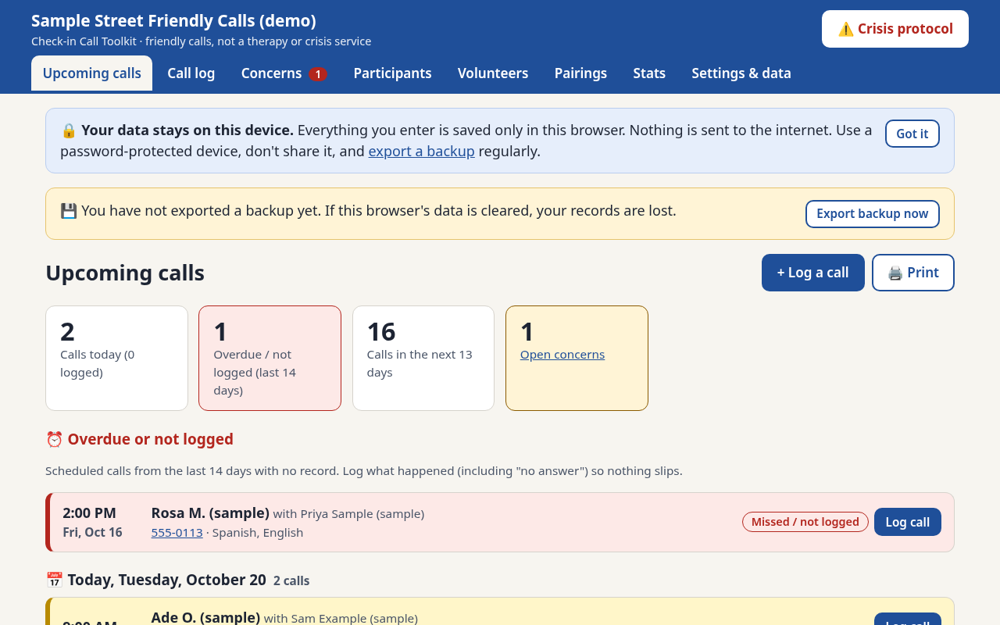
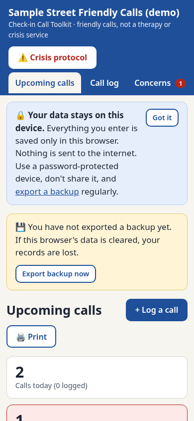

Volunteer training guide
For people making the calls: what the program is and is not, how to listen, sample scripts, and the crisis protocol. The last page is a one-page card to keep by the phone.
Help a small group stay in touch with people who feel lonely or isolated. This toolkit is free to use: an organizer app, a volunteer training guide, and a coordinator setup guide.
The Check-in Call Toolkit is a free volunteer check-in call toolkit to reduce loneliness. It is based on a 2021 JAMA Psychiatry trial of phone calls by trained volunteers (Kahlon et al.). In that randomized trial, briefly trained callers phoned 240 Meals on Wheels clients for four weeks, listened with empathy, and let the person lead the conversation. People who received the calls were less lonely, less depressed, and less anxious than people who did not.
It is meant for small charities, community groups, faith groups, libraries, and neighbour networks. Volunteers make short, regular calls. A coordinator keeps the schedule, the training, and any concerns.
Kahlon MK, Aksan N, Aubrey R, et al. JAMA Psychiatry. 2021;78(6):616–622. doi:10.1001/jamapsychiatry.2021.0113
The calls are a friendly chat with a trained volunteer. They are not therapy, counselling, or a crisis service. If someone is in immediate danger, call the local emergency number.
If someone needs a crisis line:
Data stays on the user's device. The app saves names, phone numbers, and call notes in the browser's localStorage. Nothing is sent anywhere. There is no account, no server, and no analytics. Use a password-protected device, and export a backup from Settings when you want a copy. Clearing browser data, or using a private window, erases the records.
For people making the calls: what the program is and is not, how to listen, sample scripts, and the crisis protocol. The last page is a one-page card to keep by the phone.
How to start a program in a few weeks: who it is for, consent, matching, a two-hour training session, and how to use the app.
Upcoming calls are built from the pairings you enter. Today is highlighted. Overdue calls are marked so they are easy to follow up. The layout stays usable on a phone.


Code (the app, the tests, the PDF build script, and this page's markup) is MIT. Copyright 2026 chaseymoosh-eng.
Guides and other written content are Creative Commons Attribution 4.0 (CC BY 4.0). See LICENSE-content. You may share and adapt them if you give credit.